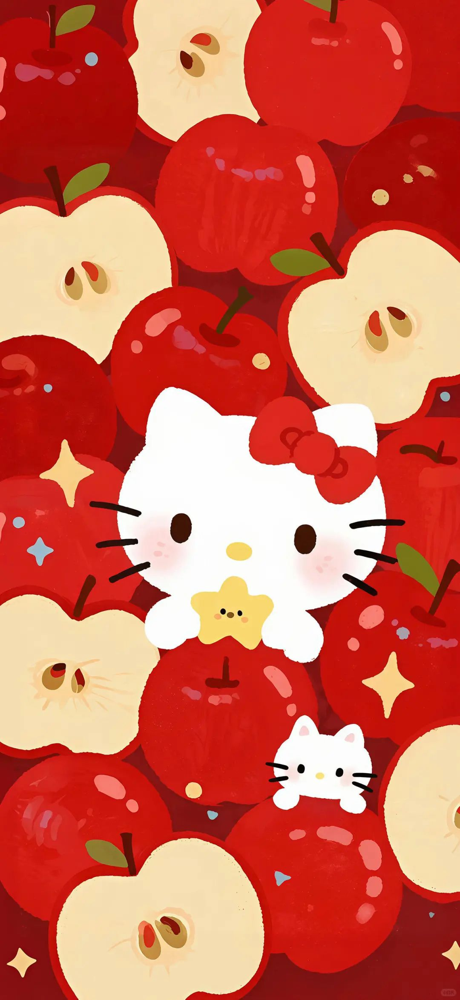

- History
- Friends
- Games
Hello Kitty is an anthropomorphic Japanese Bobtail cat with white fur, a yellow nose, black eyes and 3 whiskers on each side of her head and no visible mouth. For her attire, Kitty wears a red bow on her left ear, blue overalls with white buttons and a yellow shirt under her overalls.
In her debut, she only wears overalls with no shirt. Hello Kitty is also seen with striped shirts and different color bows and overalls in various artwork, including pink and purple. Outside of her main outfit, Kitty has been shown wearing various other forms of clothing throughout merchandise and other media.
